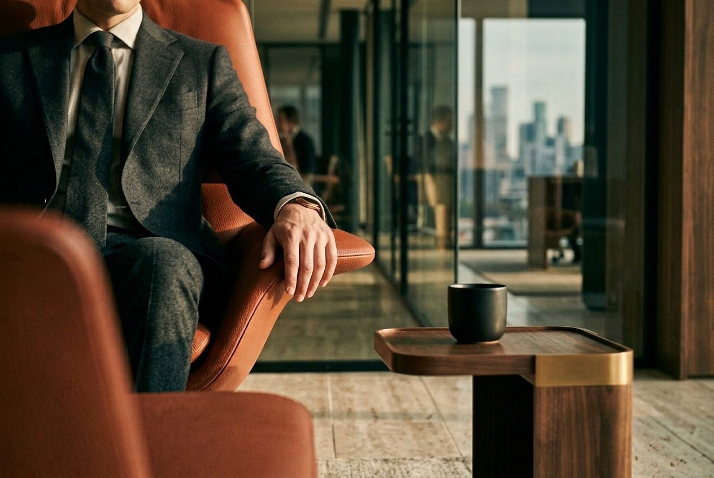
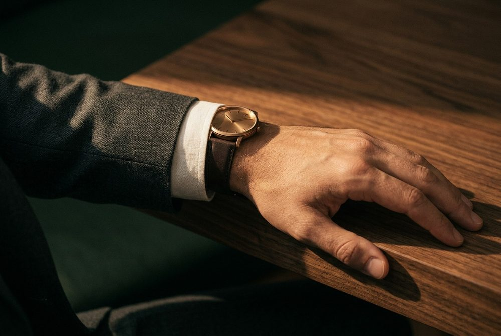

Foundations
Logo
The logo is the diamond mark with the SecondLane wordmark, supplied as one SVG (assets/logo.svg, 128 × 32 viewBox). Use it as a single colour: linen on green, green on linen or white.
Clear space
Keep at least half the logo height free on every side (16px at the 32px nav size).
Sizes
Nav: 128 × 32px. Footer: 112 × 28px. Minimum: 96px wide on screen. Never set it smaller than the body text.
Implementation
Inline the SVG or use it as a CSS mask so the colour follows a token. Give the link aria-label="SecondLane home".
Don't
Colour
A small palette: two grounds, warm neutrals for text and lines, one signal yellow and one terracotta accent, each on a full shade ramp. Components use role tokens, never raw hex values.
Core
--green · #12301FRGB 18 48 31Primary ground. Hero, nav, footer, most sections, cards.
--linen · #F5F3EFRGB 245 243 239Text on green. Light ground for contrast sections (FAQ, audiences).
--yel · #E3FD5ARGB 227 253 90Signal only: primary buttons, eyebrows on green, active states, the dot field. Never text on light grounds.
Supporting
--green-2 · #17392ARaised panels on green.
--stone · #D9D2C3Lead text on green.
--sand · #CBBFA8Secondary text on green, footer.
--mute · #55604FSecondary text on linen and white.
--rust · #8F442DEyebrow labels on light grounds. Accent only.
--on-yel · #191A16Text on yellow buttons.
--white · #FFFFFFLogo rail, inputs, light cards.
rgba(245,243,239,.18)rgba(18,48,31,.14)Hairlines on green and on linen.
Shade ramps
Every brand colour sits on a ramp from 50 to 950, built in OKLCH so the steps look even. Outlined swatches are the brand anchors: fixed values the other steps are generated around.
#E2EEE8#D4E2DB#B9CAC2#9FB3AA#859D92#6C877B#547264#3C5D4F#24493A#17392A#12301F#0C2216#F5F3EF#ECE8E0#D9D2C3#CBBFA8#ACA68F#8E8E78#717763#55604F#3D4236#252720#191A16#F7FFD6#F4FFC2#EDFF8C#E3FD5A#CFE844#B9CF37#A3B62B#7F8E1C#5D690E#3D4603#2E3500#FEE7DE#FCDBCD#F7C1AB#F0A88A#DD8C6E#C97054#B5543A#8F442D#6D3220#4C2114#3C190EHow we use the ramps
1 · Components use role tokens
Write var(--bg) or bg-bg, never #12301F or bg-green-900. Role tokens switch with the section theme, so one component works on green, linen and white.
2 · Ramps feed the roles
Use a ramp step directly only for one-off needs with no role yet: chart series, illustration fills, a tinted row, a status tag. If a step is used twice, it gets a role token.
3 · No new hex values
If a colour is missing, ask design for a role token rather than picking a nearby hex. Anchors never change without a brand decision.
4 · Bands have jobs
50–200 light surfaces and tints · 300–500 decorative fills, charts, text on green (300 and lighter) · 600–700 text and icons on light (AA) · 800–950 dark surfaces and hovers on green.
5 · Pairing rule
On green: neutral 400 or lighter, green and rust 300 or lighter, yellow 300. On linen and white: 700 or darker (yellow 800 or darker).
6 · Yellow stays a signal
300 is the brand yellow, 200 and 400 its hover and press, 600 the input focus border, 700–900 warning text on light only. Lines use transparency, not ramp steps.
Role tokens
Set data-theme="green", "linen" or "white" on each section. Green is the default.
| Role token | Green theme | Linen / white theme | Use |
|---|---|---|---|
--bg | green-900 | neutral-50 | Section background |
--bg-raised | green-850 | white | Panels and cards that sit on the background |
--bg-inverse | neutral-50 | green-900 | A block in the opposite theme |
--fg | neutral-50 | green-900 | Headings and body text |
--fg-lead | neutral-200 | neutral-700 | Standfirsts and lead paragraphs |
--fg-muted | neutral-300 | neutral-700 | Secondary text, captions, footer links |
--fg-subtle | neutral-400 | neutral-600 | Placeholders and disabled text (large text only) |
--eyebrow | yellow-300 | rust-700 | Uppercase labels above titles |
--accent | yellow-300 | yellow-300 | Primary button fill, active underline, arrows on green |
--accent-hover | yellow-200 | yellow-200 | Primary button hover |
--accent-pressed | yellow-400 | yellow-400 | Primary button pressed |
--on-accent | neutral-950 | neutral-950 | Text and icons on the accent |
--action | neutral-50 | green-900 | Secondary solid button fill (green button on light) |
--action-hover | neutral-100 | green-800 | Secondary solid button hover |
--on-action | green-900 | neutral-50 | Text on the secondary solid button |
--arrow | yellow-300 | green-900 | Arrow-link icon |
--focus | yellow-300 | green-900 | Focus outline (2px, 3px offset); at least 3:1 on the ground |
--focus-field | yellow-600 | yellow-600 | Input border when focused, always paired with --focus-ring |
--danger | rust-300 | rust-700 | Error text and icons |
--danger-border | rust-300 | rust-600 | Error field border |
--danger-bg | rust-950 | rust-50 | Error message background |
--success | green-300 | green-700 | Success text and icons |
--success-bg | green-850 | green-50 | Success message background |
--warning | yellow-300 | yellow-800 | Warning text and icons |
--warning-bg | yellow-950 | yellow-50 | Warning message background |
Interaction states
| State | Value | Where |
|---|---|---|
| Yellow hover | #EDFF8C + 0 0 0 4px rgba(227,253,90,.16) | Primary button hover |
| Yellow pressed | #CFE844 | Primary button active |
| Green hover | #24493A | Green button hover |
| Focus ring (inputs) | border #A3B62B + 0 0 0 4px rgba(227,253,90,.3) | Text fields |
| Error | #B5543A on light · #F0A88A on green | Field errors |
| Card edge | #7A846280 (50%) | Card border on green |
Proportion
Roughly how much of each colour a page uses. Dark pages (the default) lead with green; light pages invert green and linen. Yellow stays under 5% and rust under 2% in both.
Dark · green-led
Light · linen-led
White counts with linen (logo rail, cards, inputs). On light pages, yellow appears only as button fills, never as text or eyebrows; eyebrows and arrows switch to rust and green.
Section themes
Each section sets data-theme; the theme swaps a few variables and every component reads from them.
--fg linen · --lead stone · --sub sand--fg green · --lead mute · eyebrow rust--fg green · --rule 12%Contrast (WCAG 2.2)
Yellow fails on linen and white. On light grounds, eyebrows switch to rust and arrows to green; yellow buttons stay because their text is on-yellow.
Typography
Two families. Ashcroft, a serif, for headlines and large figures. SFT Schrifted Sans for body, labels, buttons and UI.
Display · headlines, figures
Text · body, UI, labels
Licensing: the prototype uses trial files of both fonts, which are for review only. Production needs web licences for Ashcroft and SFT Schrifted Sans, served as WOFF2 with font-display: swap. The client should buy the licences before launch; until then use the fallback stacks below.
| Token | Stack |
|---|---|
--serif | 'Ashcroft', 'Iowan Old Style', Georgia, serif |
--sans | 'SFT Schrifted Sans', 'Helvetica Neue', Helvetica, Arial, sans-serif |
Type scale
Desktop sizes at 1440px; the phone size applies below 900px. Line height is unitless; letter spacing is in em.
Phone 44 · Capital, Prime
Phone 36
Phone 34
Phone 28 · FAQ 32 → 24
Phone 24
Phone 48
Phone 16
Phone 16
- Sentence case for every heading and button.
- Balance headline lines (
text-wrap: balance). - Keep body lines between 50 and 75 characters.
- Use tabular figures in tables and stats.
- Set body copy in Ashcroft or headlines in the sans.
- Use bold weights above 500, italics or underlines for emphasis.
- Use all caps outside eyebrows and field labels.
- Track headlines positively.
Layout and spacing
One centred container, a 12-column grid inside it and generous vertical rhythm. Every section sits on the same left and right edges.
Container and grid
| Property | Desktop | Below 900px |
|---|---|---|
| Container max width | 1312px (1184px of content) | Full width |
| Side padding | 64px | 20px |
| Columns / gutter | 12 / 24px | 4 / 16px |
| Section padding (vertical) | 136px | 88px |
| Section head to content | 72px | 40px |
| Section head | Title 6 cols, standfirst 5 cols, bottom aligned, 72px apart | Stacked |
| Nav height | 96px, 76px once scrolled | 64px |
Common layouts
| Pattern | Columns | Used for |
|---|---|---|
| Three cards | 3 × 4 cols | Verticals, insights, LP advantages |
| Four tiles | 4 × 3 cols | Team, Prime founder blocks |
| Split | 5 + 7 cols | Text beside an image or panel |
| Stats band | 3 equal glass cards | 2013 · 17,000+ · 1,500+ |
| Footer | 5 + 2 + 2 + 2 cols | Brand line and three link columns |
Spacing scale
Use only these steps (px). Small steps space components internally; large steps separate blocks and sections.
481216243244567288136Radius and elevation
| Token | Value | Used for |
|---|---|---|
--radius-sm | 4px | Buttons, inputs, tags |
--radius-md | 8px | Cards, image frames |
--radius-lg | 12px | Glass panels (stats, waitlist form) |
--shadow-lift | 0 27px 67px rgba(0,0,0,.45) | Card hover only. Nothing has a shadow at rest. |
--glass | fill rgba(18,48,31,.55), blur(24px), 1px line at 20%, inner top highlight 12% | Panels over the dot field or photos |
Breakpoints: 900px switches to the phone layout, 1180px moves the company directory's sidebar above the list. Phone layouts are not designed yet: they follow once the desktop layouts and components are approved. Until then, stack columns in reading order at 900px.
Imagery
Two approved styles: warm editorial photography for people and places, and halftone objects for the sectors SecondLane covers. Plus one generated pattern, the dot field.
Photography



- Natural light, warm tones, real materials: stone, wood, wool, brass.
- Quiet, unposed moments; people seen at work, not smiling at the camera.
- Leave calm space for text when the image sits behind type.
- Filters, heavy grading, neon or yellow light.
- Trading screens, charts on monitors, handshakes, piles of cash.
- Stock photography that looks staged.
Halftone objects


- One object per image from a SecondLane sector: AI, crypto, fintech, consumer tech, gaming, space, deep tech, autonomy, defense, energy.
- Dark version: object on
#12301Fwith a soft dot halo that fades out, never an opaque glow. Light version: object alone on#F5F3EF. - One small terracotta or bronze accent per image. No yellow or neon inside images: yellow belongs to the interface.
Dot field
| Property | Value |
|---|---|
| Ground | #12301F, drawn on a <canvas> at up to 2× device pixel ratio |
| Grid | 9px cell, dot centred in each cell |
| Dot at rest | radius 1.05px, rgba(227,253,90,.22) |
| Near the pointer | within 220px, smoothstep falloff f: radius 1.05 × (1 + f), alpha .22 + .5 × f |
| Pointer easing | follows at 0.12 per frame; fades in at 0.08, out at 0.03 |
| Performance | draw only while on screen (IntersectionObserver); static at rest under reduced motion |
Image ratios
Serve images as AVIF or WebP with a JPEG fallback through srcset, lazy-load everything below the first screen, and give each image meaningful alt text (empty alt="" for decorative halftones). The images in the prototype are placeholders; final art is produced per page.
Motion
Slow and soft: things settle rather than snap. Motion only responds to the visitor or reveals content once. Hover a row to play it.
cubic-bezier(.2,.7,.2,1)--ease: cubic-bezier(.65,0,.35,1)- Animate
transformandopacityonly. - Honour
prefers-reduced-motion: no lifts, rises or moving dots; everything visible at once. - Keep content readable if scripts fail: hidden-until-revealed content must default to visible.
- Parallax, auto-playing carousels, tilt or bouncing easings.
- Zoom images on hover.
- Loop anything for more than 5 seconds without a pause control.